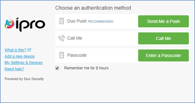
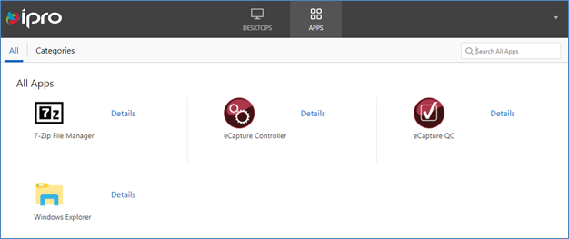
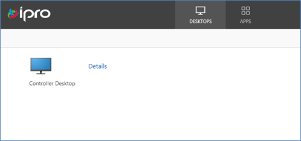

Enter your User name and password, click Log On.

- Send Me a Push is recommended
- Select Remember me for 8 hours
Approve authenticate using your mobile device

This topic explains how to log in to the
Once activated you will be able to access your environment using two-factor authentication. Access the portal using any web browser.
Enter your User name and password, click Log On.
Approve authenticate using your mobile device

Once logged in, you will be presented with a few virtual applications that are available in your environment. Below is description of each:

|
Application |
Description |
|---|---|
|
7-zip File Manager |
7-zip File Manager can be used to compress a collection of one or more files and/or folders into a single file for easy transportation and compression. |
|
eCapture Controller |
The desktop console used for manually creating clients, cases (projects), custodians, discovery jobs, managing/assigning task tables, creating export series, viewing detailed information about each Worker and the tasks being performed. The eCapture Controller will be required to requeue and publish any errors/exceptions from a Streaming Discovery Job. |
|
eCapture QC |
The QC Module checks the accuracy of discovery and processed jobs. Use this application to manually reprocess individual files or groups of files based on field or flag value. |
|
Eclipse Admin |
Eclipse Admin console is used to manually create clients, cases, create and manage fields, import pre-processed data and manage analytics features within your review case |
|
Windows Explorer |
Windows Explorer provides a graphical user interface for accessing the file systems of your cloud environment. Windows Explorer will be needed to create directories for cases and exports/productions. |
If you prefer, you can also choose to access these applications through a virtual desktop. The virtual desktop will have all applications needed in your cloud environment.

When you need to upload data to or download data from your cloud environment, using FTP, in most cases is the fastest and most cost effective. FileZilla will need to be installed on your local machine in order to use this feature.
If an additional user needs access to the cloud portal, please reach out to our
Related Topics